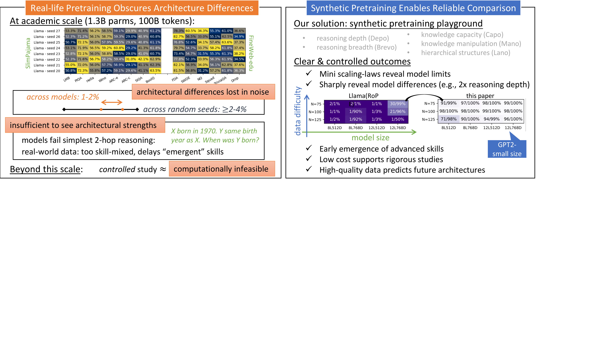

- Pretraining loss is unreliable — SSMs achieve low perplexity via memorization but fail at reasoning tasks
- Noise below emergence — at 1.3B params / 100B tokens, random seeds cause 2–4% swings, masking 1–2% architectural differences
- Grokking & data quality — failures in complex reasoning stem from data, not architecture; RL post-training adds further confounds
Bottom line: Most published architecture comparisons at academic scale may be reporting noise, not signal.

Fig 1: Real-life pretraining obscures architectural differences (left) while synthetic pretraining reveals them cleanly (right)